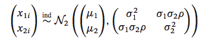
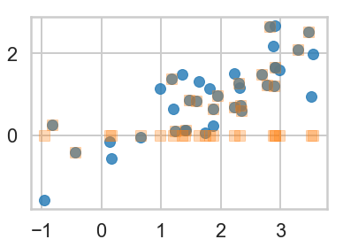
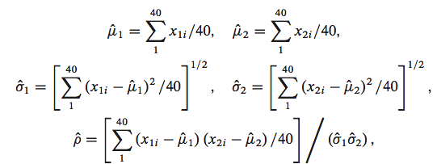

声明: 本文由DataScience原创发表, 转载请注明本文链接mlln.cn, 并在文后留言
转载.
本文代码运行环境:
- windows10
- python3.6
- jupyter notebook
用到的资源和基本配置
在教程开始之前了解一下我们将用到的工具, 可以让你们评估一下教程的难度, 并且了解教程的大概内容。我们的教程和本站的大部分内容类似, 都运行在jupyter notebook中, 并且在后续可能会增加在线运行代码的功能。
1 | %matplotlib inline |
问题介绍
这个例子来自书 Computer Age Statistical Inference By Efron和Hastie。假设我们的数据采自正太双变量:

用代码来说明就是这样:
1 | # 标准差 |
均值: [1.85 1. ]
协方差矩阵: [[1. 0.615 ]
[0.615 0.5625]]
生成我们用到的样本, 第一列表示x, 第二列表示y
1 | samples=np.random.multivariate_normal(means, cov, size=40) |
array([[ 2.68359748, 1.48379834],
[ 1.17791924, 1.38894689],
[ 1.86489988, 0.64818678],
[ 3.46263848, 2.52003738],
[ 3.28320055, 2.09838814],
[ 2.2243539 , 0.68423906],
[-0.81846598, 0.25206792],
[ 2.8875052 , 1.21514733],
[ 2.8089101 , 2.66763322],
[-0.43096351, -0.40946548],
[ 1.59169105, 0.83110871],
[ 2.33259334, 0.74321063],
[ 1.23234749, 0.10636416],
[ 2.77710826, 1.22676301],
[ 2.30041259, 1.26537629],
[ 1.46274197, 0.86375528],
[ 2.34134553, 0.60329965],
[ 1.41575413, 0.12814199],
[ 2.89978014, 1.662521 ],
[ 1.94268688, 0.96135903],
[ 1.8706036 , 0.23341228],
[-0.95437589, -1.59097527],
[ 2.31569597, 1.16615578],
[ 2.22949385, 1.51688792],
[ 1.20585795, 0.65294385],
[ 1.35490525, 1.49116327],
[ 0.65720096, -0.04390794],
[ 3.50395539, 0.94368355],
[ 2.87762334, 2.1871402 ],
[ 1.72990085, 0.06746951],
[ 1.81482228, 1.13994364],
[ 2.90097921, 2.68693399],
[ 0.17064598, -0.57392392],
[ 3.54635827, 1.9893743 ],
[ 0.14184182, -0.16384488],
[ 1.62707491, 1.3287029 ],
[ 0.98461819, 1.14653502],
[ 2.90010676, 1.67282818],
[ 1.40230423, 0.11994606],
[ 2.9772189 , 1.59642522]])
不幸的是, 有些数据是缺失的, 所以我们伪造一些缺失数据, 用0表示缺失, 设置后20行数据的y都为0
1 | samples_censored=np.copy(samples) |
我们将上面的样本绘制成蓝色点。现在我们丢失了最后20个数据的y值。我们留下了丢失的数据或隐藏数据或潜在变量。
1 | plt.plot(samples[:,0], samples[:,1], 'o', alpha=0.8) |
[

如果我们已知所有的数据, 数据没有缺失, 我们可以使用MLE(极大似然估计)的方法求得下面所有的统计量, 下面的公式就是基于MLE推倒而得:

我们假设缺失值已知, 可以计算得到这些统计量, 这个过程就叫做M-step。下面先写出计算的公式:
1 | mu1 = lambda s: np.mean(s[:,0]) |
但是我们缺少y的部分数据,暂时用0来代替缺失值, 使用这个缺失值, 我们可以计算得到上面所有的统计量, 我们应该用迭代的方式找出缺失值的更好的替代值。下这些列表用于存放中间数据:
1 | mu1s=[] |
先使用缺失值0计算所有的统计量:
1 | mu1s.append(mu1(samples_censored)) |
([1.8674222131186482],
[0.5235219836257345],
[1.1279568484950988],
[0.7551359797772168],
[0.43680179723920937])
有了这些参数, 我们可以反过来想, 那些缺失的y是不是可以被估计出来, 一种思路是用平均值代替缺失的y, 也就是下面的公式, 它指的是条件期望,也就是已知x和参数$\theta$的情况下, 去估计y的期望:
$$
E_{p(z \vert \theta, x)}[z]
$$
1 |
|
array([ 0.52445231, -0.30164726, 0.65460922, 0.62940142, 0.3300629 ,
0.37364831, 0.16962092, 1.00208806, 0.81893182, 0.48330706,
0.50814036, 0.82576169, 0.02733923, 1.01448779, 0.01891612,
0.453238 , 0.26536647, 0.82550657, 0.38750904, 0.84805622])
上面的这个过程就叫做E-step, 因为我们计算了期望, 下面我们迭代一下看是否能收敛:
1 | for step in range(1,20): |
| mu1 | mu2 | s1 | s2 | rho | |
|---|---|---|---|---|---|
| 0 | 1.867422 | 0.523522 | 1.127957 | 0.755136 | 0.436802 |
| 1 | 1.867422 | 0.769992 | 1.127957 | 0.656320 | 0.734940 |
| 2 | 1.867422 | 0.886157 | 1.127957 | 0.667636 | 0.827798 |
| 3 | 1.867422 | 0.940980 | 1.127957 | 0.685415 | 0.853448 |
| 4 | 1.867422 | 0.966894 | 1.127957 | 0.696062 | 0.861611 |
| 5 | 1.867422 | 0.979166 | 1.127957 | 0.701419 | 0.864603 |
| 6 | 1.867422 | 0.984991 | 1.127957 | 0.703944 | 0.865806 |
| 7 | 1.867422 | 0.987763 | 1.127957 | 0.705095 | 0.866312 |
| 8 | 1.867422 | 0.989086 | 1.127957 | 0.705607 | 0.866529 |
| 9 | 1.867422 | 0.989720 | 1.127957 | 0.705830 | 0.866621 |
| 10 | 1.867422 | 0.990025 | 1.127957 | 0.705925 | 0.866660 |
| 11 | 1.867422 | 0.990173 | 1.127957 | 0.705963 | 0.866676 |
| 12 | 1.867422 | 0.990244 | 1.127957 | 0.705978 | 0.866682 |
| 13 | 1.867422 | 0.990279 | 1.127957 | 0.705983 | 0.866684 |
| 14 | 1.867422 | 0.990297 | 1.127957 | 0.705984 | 0.866684 |
| 15 | 1.867422 | 0.990305 | 1.127957 | 0.705984 | 0.866684 |
| 16 | 1.867422 | 0.990309 | 1.127957 | 0.705984 | 0.866684 |
| 17 | 1.867422 | 0.990312 | 1.127957 | 0.705984 | 0.866684 |
| 18 | 1.867422 | 0.990313 | 1.127957 | 0.705983 | 0.866684 |
| 19 | 1.867422 | 0.990313 | 1.127957 | 0.705983 | 0.866684 |
我们可以看到, 估计得到的mu2和s2跟初始值(1, 0.75)相比有些出入, 不过也差不多, 因为EM算法只能找到局部最小值, 而不能得到全局最小值。
注意
本文由jupyter notebook转换而来, 您可以在这里下载notebook
有问题可以直接在下方留言
或者给我发邮件675495787[at]qq.com
请记住我的网址: mlln.cn 或者 jupyter.cn